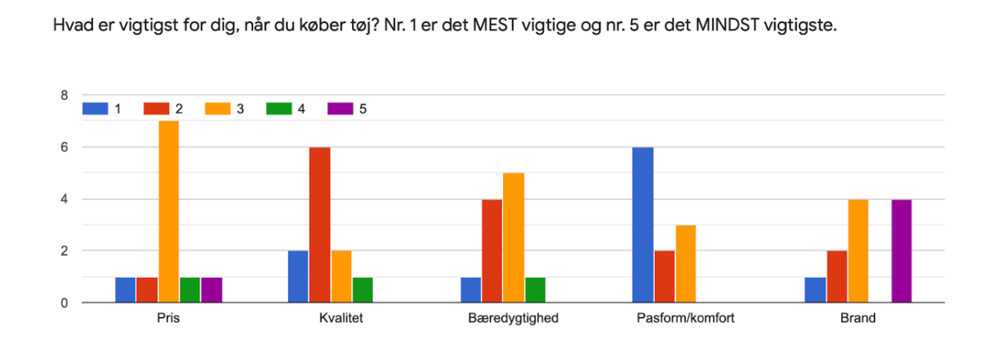

I tema 3 blev jeg introduceret til researchmetoderne survey, interview og desk- og observationsresearch.
Survey researchen især bekræftede hvad jeg havde fundet i min desktop desearch, og var et vigtigt værktøj ift. at kunne finde frem til det rette USP.
Jeg har udarbejdet min idé og løsning på en webshop baseret på min research og de indsigter, der kom med den. Som det fremgår af eksemplet på et af svarresultaterne, var bæredygtighed for dem, der svarede, ikke lige så vigtigt som nogle af de andre faktorer, og derfor ændrede jeg konceptet bag mit USP, der ellers prioriterede bæredygtighed.
Jeg har arbejdet med at producere prototypens microcopy, samt gøre brug af UI- konventioner, der instruerer og giver feedback til brugeren, når der fx skal tilføjes en vare i kurven, for en bedre brugeroplevelse.
I projektets afsluttende pitch lagde jeg vægt på indsigterne fra min research for at præsentere og understøtte mine valg ift. USP og den endelige løsning.